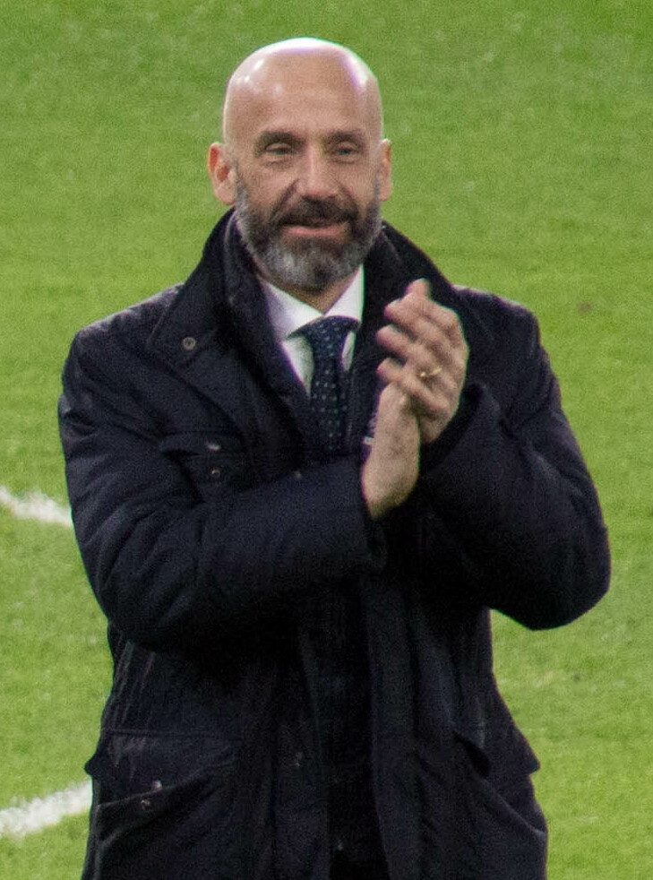
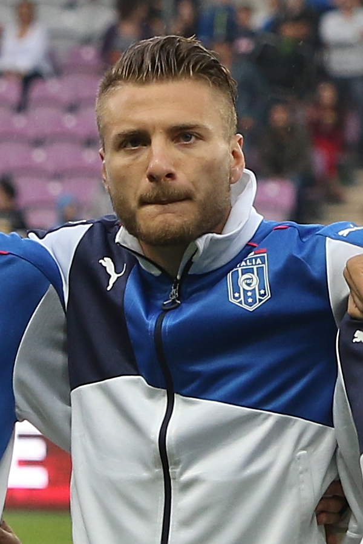
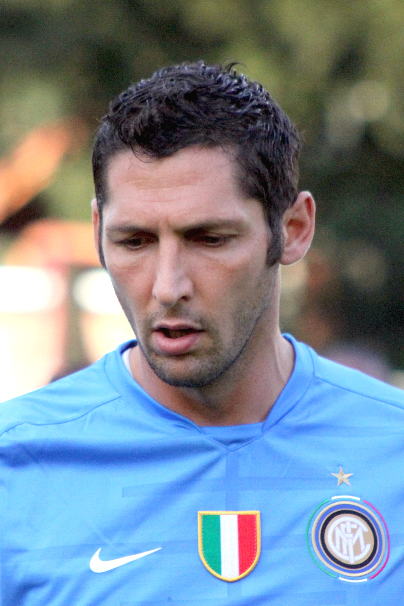
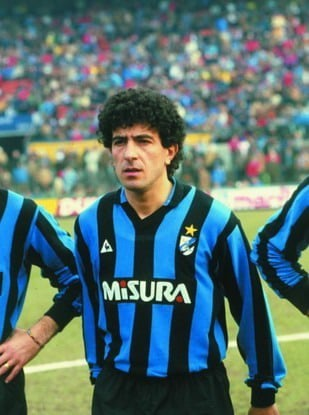
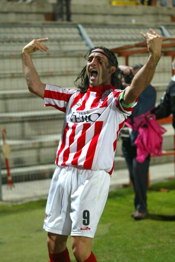

Gianluca Vialli
Gianluca Vialli, légende de Cremonese et de Sampdoria, a laissé une empreinte indélébile
sur la Serie B grâce à son jeu élégant et son instinct de buteur hors pair.
Ciro Immobile
Ciro Immobile, brillant attaquant révélé à Pescara en Serie B, a marqué l'histoire avec son talent pur
et sa détermination sans faille, propulsant son équipe vers de nouveaux sommets.
Marco Materazzi
Marco Materazzi, défenseur robuste et redoutable de Perugia, a dominé la Serie B avec son jeu physique et sa détermination sans compromis,
devenant une force incontournable dans la conquête de la promotion de son équipe.
Gianfranco Matteoli
Gianfranco Matteoli, défenseur italien emblématique, a laissé son empreinte dans l'histoire du football italien grâce à sa longue carrière principalement
passée en Serie B, défendant avec détermination les couleurs de Osimana et d'autres.
Stefan Schwoch
Stefan Schwoch a marqué sa carrière en tant qu'attaquant émérite,
évoluant principalement en Serie B. Sa contribution dynamique et offensive sur le terrain a fait de lui un joueur respecté dans le monde du football italien.